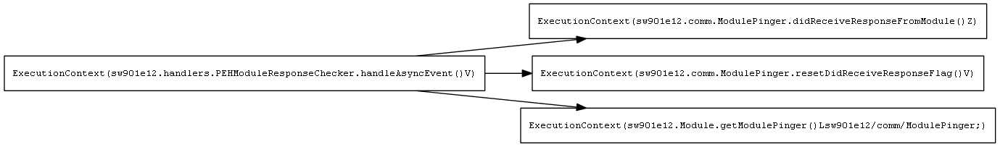

<body>
<h2>Call Graph</h2>

<h2>List of referenced methods</h2>
<ul>

<li/> <a href="sw901e12.comm.ModulePinger.resetDidReceiveResponseFlag__V.html">sw901e12.comm.ModulePinger.resetDidReceiveResponseFlag()V</a>
<ul>
<li/>Size in words: 2 (1 blocks)
<li/>Referenced methods: []
</ul>

<li/> <a href="sw901e12.Module.getModulePinger__Lsw901e12_comm_ModulePinger_.html">sw901e12.Module.getModulePinger()Lsw901e12/comm/ModulePinger;</a>
<ul>
<li/>Size in words: 2 (1 blocks)
<li/>Referenced methods: []
</ul>

<li/> <a href="sw901e12.comm.ModulePinger.didReceiveResponseFromModule__Z.html">sw901e12.comm.ModulePinger.didReceiveResponseFromModule()Z</a>
<ul>
<li/>Size in words: 2 (1 blocks)
<li/>Referenced methods: []
</ul>

<li/> <a href="sw901e12.handlers.PEHModuleResponseChecker.handleAsyncEvent__V.html">sw901e12.handlers.PEHModuleResponseChecker.handleAsyncEvent()V</a>
<ul>
<li/>Size in words: 16 (1 blocks)
<li/>Loop Bounds: [; UNION(10, 0)]
<li/>Referenced methods: [sw901e12.Module.getModulePinger()Lsw901e12/comm/ModulePinger;, sw901e12.comm.ModulePinger.didReceiveResponseFromModule()Z, sw901e12.comm.ModulePinger.resetDidReceiveResponseFlag()V]
</ul>
</body>